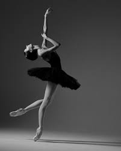

A dança para muitos é um hobby, para outros é uma forma de expressar seus sentimentos, de dizer através de movimentos seus sentimentos, o que pensa, nesse site veremos os grandes dançarinos da história e quais os tipos de dança

1.Anna Pavlova nascida na cidade de São Petersburgo, cidade da Rússia 2.Maurice Béjart nascido na cidade de Marselha, sul da Franç 3. Márcia Haydée